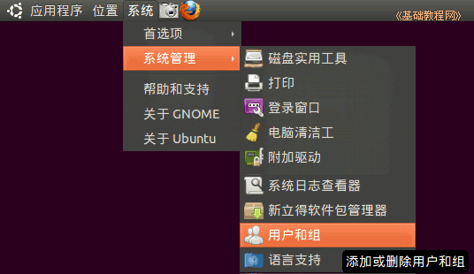
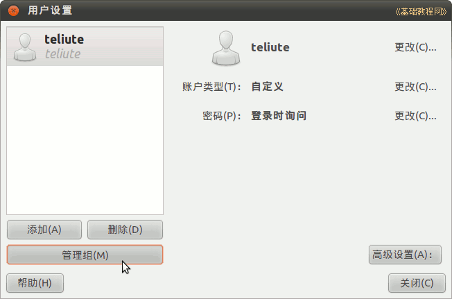
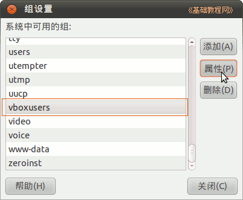
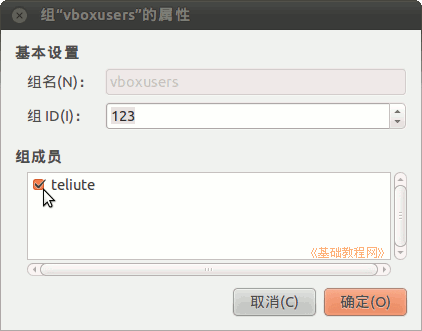
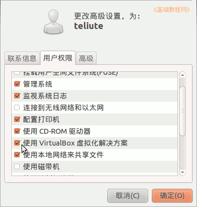
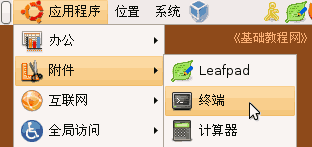
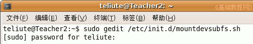
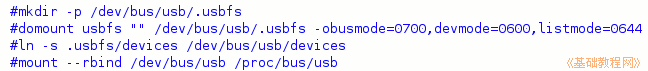
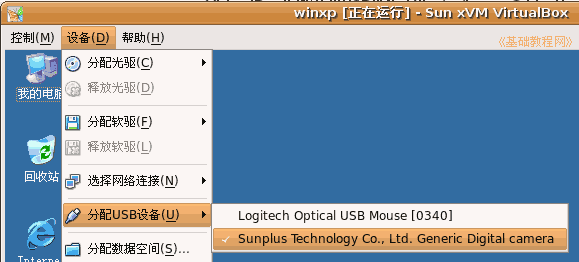

VirtualBox 虚拟机基础入门教程
作者：TeliuTe 来源：基础教程网
八、使用USB设备 返回目录 下一课USB设备包括摄像头、U盘等，如果你要在虚拟机中使用，还需要进行设置，下面我们来看一个练习；
0、设置 USB 用户组权限
1）点菜单“系统－系统管理－用户和组”，对应终端命令： users-admiuser

2）在出来的面板左下角找到“管理组”按钮，点击进入；

3）找到vboxusers组，选中后点右边的“属性”按钮；

4）在出来的面板中，打勾自己的用户名，然后点“确定”；

5）回到主面板后，再点右边的“高级设置”按钮，进去在“用户权限”里找到“使用 VirtualBox 虚拟化解决方案”，打勾选中后点确定

6）重新启动计算机，就可以使用 USB 设备了；
以下是以前的老方法，不适用新版 Ubuntu 仅供参考
1、修改mountdevsubfs.sh文件
1）在Ubuntu下点菜单“应用程序－附件－终端”，打开一个终端窗口；

2）在出来的终端窗口中输入下列代码，每输入一行后按一下回车键，
第一行回车后会要求输入密码，输入自己的密码，注意密码不会显示出来，输完后按回车；

3）进入gedit文本编辑器窗口后，找到下面四行（可以用搜索功能），删除去掉前面的#号，
#号是注释标记，碰到它程序会忽略这一行；

4）修改好了以后保存退出gedit文本编辑器，回到终端窗口；
2、增加usbfs组和权限
1）在终端里输入下面命令，增加usbfs用户组；
sudo groupadd usbfs
2）接着输入下面命令查看usbfs组的gid，查到后记下来；
cat /etc/group | grep usbfs
例如：usbfs:x:1001:teliute
3）把自己的用户名加入到usbfs组里，输入下面的命令；
sudo gedit /etc/group
4）进入gedit文本编辑器窗口后，把最下面的usbfs组那一行；
usbfs:x:1001:
修改一下，也就是在后面添加上自己的用户名，然后保存退出文本编辑器窗口；usbfs:x:1001:teliute
5）接下来输入下列命令，修改fstab文件；
sudo gedit /etc/fstab
6）进入文本编辑器后，在最后加上两行，注意把1001改成自己的gid
#1001 is the USB group ID
none /proc/bus/usb usbfs devgid=1001,devmode=664 0 0
7）重启动计算机，启动VirtualBox，点设置USB设备，点右边的加号按钮添加USB设备（参考第3课），
8）然后启动虚拟机，进入WinXP以后，点菜单“设备－分配USB设备”，打勾要使用的USB设备，然后就可以使用了；
；
9）对于U盘或MP3播放器，要先在主机中桌面图标上点右键，选“卸载文件卷”，然后再去分配设备里打勾，重复打勾两次，等一下就可以找到可移动磁盘了；
本节学习了VirtualBox中使用USB设备的基本操作，如果你成功地完成了练习，请继续学习下一课内容；本教程由86团学校TeliuTe制作|著作权所有
基础教程网：http://teliute.org
美丽的校园……
转载和引用本站内容，请保留版权信息和本站链接。